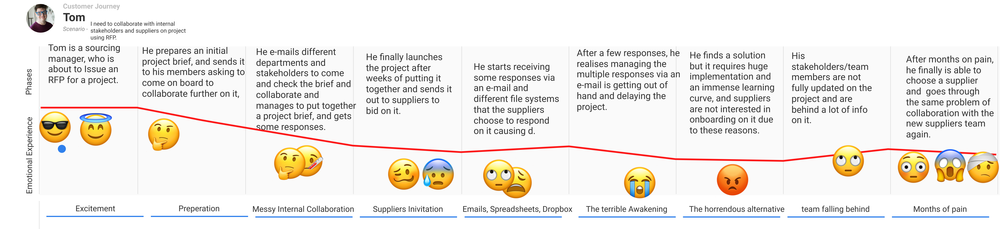
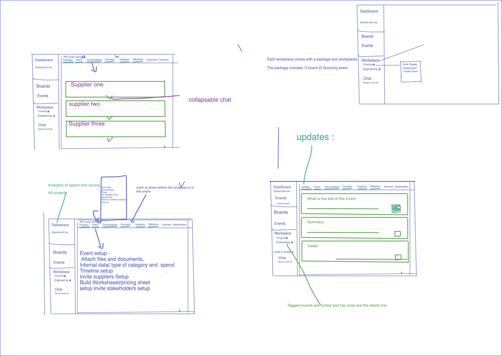
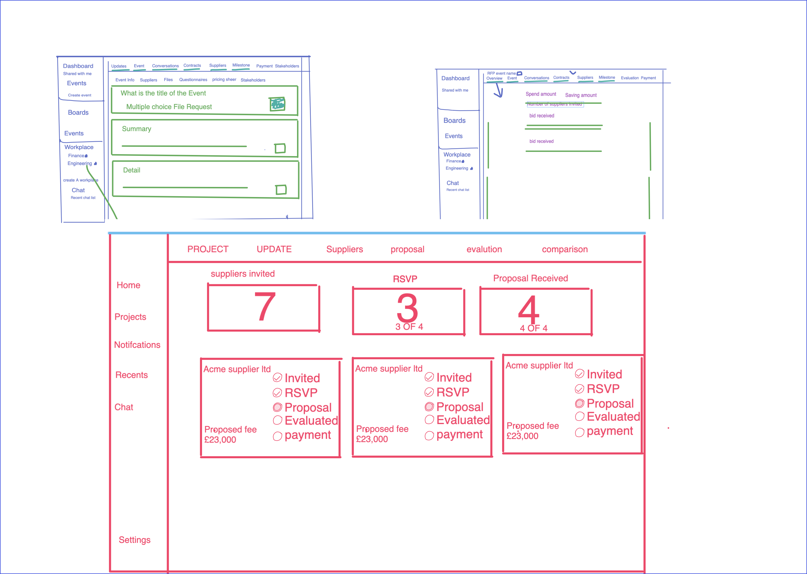
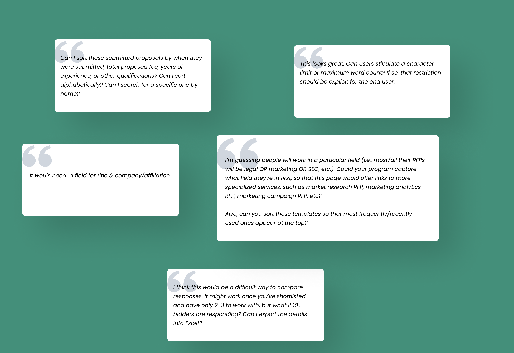
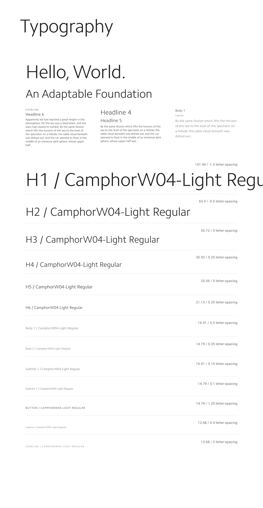
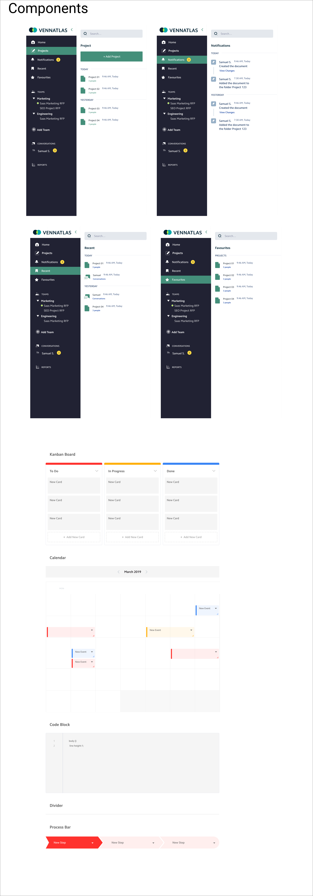

Procurement and Sourcing Platform
The supply chain is one of the oldest, biggest markets in the world. At the same time, it’s less explored space by new technologies. This leaves it vulnerable to be inundated with outdated systems. The systems are not useful, and even bring painful experiences for its users. This was my initial experience when I tried to find a solution for managing freelancers I connect with remotely. As part of the design process, I initiated and launched a sprint: using primary data from interviews of industry experts, to be able to understand the problem in more detail.
Sprint: 3 Weeks
Skills
Project Canvasing, Stakeholder Management, User Interviews, Empathy Mapping, User Flows, Participatory Design, Experience Mapping, Sketching, Rapid Prototyping, Usability Testing, Visual Design.
My Design Process

User research
When starting an exciting project like this one, it can be excruciating not open my design software and start generating concepts. I have been on this path before where I get into deep details at the early stage. Over time, I have to realise that I need to restrain myself from that. because once I started with the foundation being high fidelity exprience it pollutes my judgment and also most importantly the way users engage with you. It's best to keep simple, and talk to people about their problems and workarounds naturally.
Therefore, prior to getting ahead of myself, I need to make sure I get down to the details of the user's life currently by asking them questions.
- +What is the root problem?
- +Who is the user?
- +What exactly are the pain points?
- +What type of workarounds have they created to help them with the problems i.e tools and software they use?
Testing the waters with manufacturing startup.
The project started with a research and interview with manufacturing focused tech company, called Majik. This was the first interview conducted with a supply chain company that I thought would be the potential target user for my research, however, after a series of questions and learning what they do, I found out they are not the user who deal with RFPs(Request for proposals).
Despite the interview not being with the right user base, I learnt about the whole deal of matters. As someone who is new to this market and sets of products, the descusion was fruitful and there were a lot of questions and hypothesis that came out of this interview.
Nevertheless, I need to be resourceful and find the right target group of users.
- * Currently companies largely use emails or other tools to: * Create an RFP and send it internally for review * Send out RFPs to suppliers for projects and receive responses from suppliers.
- * These companies use multiple modes of communication at times such as IMs, docs, etc. that are not in a central platform
- *
- * Companies also hire RFP writers and agencies, RFP writers mostly use Word document to author their RFPs
- * They are hired because it's complex to deal with proposal
- * Procurement managers budget and are told to minimize spend and they have communicate value
- * What exactly is the complex part for their RFP folks?
- * It's not centralized - no place to bring all the people and proposals in one place
- * They have to make sure to not go over their budget and
- * They can't easily show how much $ they saved to their CTOs. etc → feature
- * Target customers - the RFP or procurement people
- * Main Hypothesis: They don't have a centralized system. What problems does this cost
- * You can't go question by question and compare responses
- * You want to easily know who has responded and has not
*Hypothesis to confirm *
Found my target user group
B2B user research harder than B2C, especially supply chain market. I quickly learned that the user base is niche within the supply chain and procurement market. The user base was, in fact, Sourcing managers who were responsible for managing RFPs within a company. This was a huge relief, and now comes understanding them in depth.
The research showed although, there are some solutions out there, users still refuse to use them, and still use manual processes. So, I wanted to find out more about their process, and asked me the following questions, here are the direct quotes that the users said.
More research
The research was enlightning, and finding about the problems the Sourcing managers face was confirmed some of the hypothesis I gathered from my initial interview, my secondary research, and also my own painpoints of running into these problems time to time. Time to get personal with my users.
Personas
After interviewing 14 individuals who fall under the target audience, I generated a user persona based on the sourcing manager I talked to. This is designed to help me understand the demographic, goals and behaviors of my potential user.

User journey

Competitive Analysis
I evaluated the two biggest Vendor Management Beeline and Fieldglass SAP’S softwares in the industry, using *Nielsen Norman Group’s Usability Heuristics* (https://www.nngroup.com/articles/ten-usability-heuristics/)** **for** **User Interface Designs against following benchmarks:
Visibility of system status
User control and freedom
Consistency and standards
Recognition rather than recall
Flexibility and efficiency of use
Aesthetic and minimalist design
Error prevention
.png)
Sifting through the research
Formula: Importance - current satisfaction = opportunity
Staying focused on the user, I started with creating a Job story that's based on the Jobs To Be Done framework. I started with a list of features and rated the user's desired outcome. The rating is based on how important they are satisfied the users are with the current solutions they have.
This is one of my favourite framework because It helps see were the real value is and also features that are not useful for the user, I shouldn't focus on now.
This is a lighter formula from the Lean Product Playbooks's Importance vs. Satisfaction matrix, the Gap Analysis and Jobs To Be Done opportunity score calculation into this formula.
As you can see from the score, the opportunity scores are mostly high on each feature. Most of the users I have interviewed are not satisfied with the overall solutions they currently have.
Payment and Invoices have a low opportunity score[score: 1] because the user would use other payment focused platforms to facilitate those needs.
Design
Applied the following principles to my design:
1. Law of Common Region
2. Law of Proximity
3. Law of Uniform Connectedness
I wanted the user to have a less cognitive load when it comes to running the product, so I followed the modular design approach so the user can focus on the project. An example can be seen in the wireframe below where the procurement manager can see the lists of suppliers invited, interested("RSVP")m submitted proposals and their progress is displayed within a card, all in one view. This saves the user a lot of time and updates them the progress of their project in seconds.
Sketching and Wireframes

The hierarchy provides a great role in the information architecture of this dashboard. *Showing the most relevant tasks and content at the top of the page was crucial so that boat owners could see their service tasks and status at a glance.*
I choose to use an operational dashboard using cards for this redesign to show the users what status their project is in, as well as color coded for easy checking at a glance.
The dashboard has been structured so that the most important data is visible within the card using different font weight and size helping the user get a snapshot as soon as they open the dashboard.
Testing and Feedback
What a relief, the concept was received well when I came to test with procurement managers.
Design system for scaling
Before focusing on creating the UI, I needed to focus on the style and patterns for the new branding.
This design system is based on atomic design principles. The system consists of a grid, typography, colors, navigation, and information architecture. *The design system was proven to be a key element in streamlining the design and development process, providing a single source of truth and consistency throughout the life of the product.*
Typography
Color Palette

Components
Final Outcome


Project Preview
Workspace: Collaboration
Comparing suppliers: Apples to Apples
Key Lessons
Early Documentation
In the early stages of the project, I need to improve my documentation and organising my knowledge of findings. Although, I have gathered enough contextual information, using a new tool like Miro was a mistake, Since realising this, I have returned to Quip for project documentation. Quip serves as a single source of truth for all my projects going forward.
Tightening Up my research
My target users are busy people and I spent a great deal of time trying to get them to talk to me about their day to day experiences of dealing with procurement. I could have tightened my questions, and dig deep even with further with more questions If I have the luxury to get more time out of them. However, the data collected is satisfactory for this current stage.
Next Post